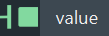

值类型 指的是数据的类型，例如，整数、小数、向量等。还可以是每种类型的数组和数组的数组。
类型通过连接和端口的颜色来表示。即使端口具有不同的颜色，仍有可能将其连接：
float 值升级为 double，将 uint 值升级为 float。auto。auto 类型的端口可以接受不同类型的连接。| 颜色 | 类型 |
|---|---|
小数值。这些可以是单 (float) 或双精度 (double) 浮点值。 |
|
float 或 double 值的 2D、3D 或 4D 向量。 |
|
float 或 double 值的矩阵。 |
|
| 各种宽度的有符号或无符号整数。 | |
| 字符串。 | |
布尔值。此颜色还用于枚举，如 rotation_order。 |
|
| 对象。对象可以是网格、体积和点对象等几何对象，也可以是旨在用于特定节点的自定义数据结构。 | |
其他类型。这些可以是除 float 或 double 以外的类型的向量和矩阵、函数曲线 (fcurves) 等。一种特定类型为 any，该类型可用作包裹器，在运行时执行类型检查。 |
|
auto（未解析的颜色）。类型 auto 是一个占位符，在编译和执行图表之前必须将其解析为另一个特定类型。如果未解析，则为灰色。否则，它为已解析类型的颜色。 |
auto 类型端口auto 类型端口很特殊，它们可以根据传入连接采用新的类型。auto 类型类似于占位符 - 必须从端口连接或默认值推断出真实的具体类型。auto 类型端口拥有一个垂直的“光晕”和所推断类型的颜色。

例如，默认情况下，length 节点有一个解析为 float3 的输入端口和一个解析为 float 的输出端口。不过，由于这些端口是 auto 端口，您可以连接 double2 作为输入，输出变为 double。
尽管 auto 端口支持多种类型，但它们并非可以支持所有类型。支持的特定类型具体取决于每个节点。例如，不可将矩阵用作 length 的输入，因为矩阵没有长度。
通过在端口上单击鼠标右键并从“值类型”(Value Types)菜单中选择类型，可以在引用复合上设置 auto 端口的类型。请参见设置端口类型。